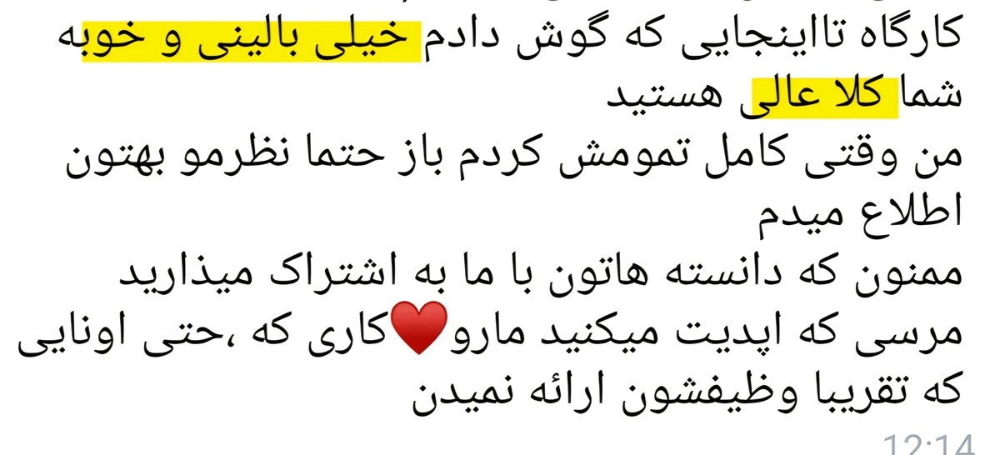

چرا کودکان غذا نمیخورند؟
بررسي علل ريشه اي مشکلات غذا خوردن کودکان
این دوره دقیقاً چیه و برای چه کسانی مناسبه؟
دوره بدغذایی یک دوره بسیار کامل، جامع و تماماً بالینی و عملی برای ارزیابی و درمان اختلالات غذاخوردن کودکان هست.
در این دوره ابتدا با دلایل ریشهای مشکلات غذاخوردن کودکان آشنا میشید، سیر تکامل طبیعی غذاخوردن رو یاد میگیرید و یاد میگیرید تشخیص بدید چه زمانی با یک اختلال روبهرو هستید و چه زمانی نمیتونید برچسب اختلال به کودک بزنید.
بعد، ارزیابی کیس رو بهصورت کامل و به تفکیک تمام حیطههای پزشکی، تغذیهای، دهانیـحرکتی، حسی، رفتاری، محیطی و پوزیشنال یاد میگیرید.
یاد میگیرید یافتهها رو کنار هم بذارید و تشخیص افتراقی انجام بدید؛ یعنی بفهمید مشکلی که در کودک میبینید دقیقاً از کجا ناشی میشه تا بتونید مداخله مناسب همون کودک رو انتخاب کنید.
با نقش اعضای مختلف تیم درمان آشنا میشید و یاد میگیرید چه زمانی، برای چه مشکلی و به کدام متخصص ارجاع بدید.
قبل از شروع درمان هم تمام مواردی که باید اصلاح یا آماده بشن بررسی میشن؛ از حمایتهای پزشکی و تغذیهای گرفته تا مداخلات دهانی، حسی، رفتاری، محیطی، پوزیشنال و ابزارهای مورد استفاده هنگام غذاخوردن. مثلاً تغییراتی که باید بر اساس پروفایل حسی کودک در محیط ایجاد بشه، مداخلات رفتاریای که قبل از شروع درمان باید انجام بشه و...
بعد از آمادهسازی شرایط، وارد آموزش دو رویکرد اصلی میشیم:
Sequential Oral Sensory (SOS)
Food Chaining
و بر اساس این رویکردها یاد میگیرید پروتکل درمان رو قدمبهقدم برای هر کودک طراحی کنید.
هدف دوره این نیست که فقط چند تکنیک یا فعالیت یاد بگیرید؛ قراره مسیر درمان یک کودک بدغذا رو از ارزیابی اولیه تا طراحی و اجرای مداخله و گسترش تدریجی رژیم غذایی، از صفر تا صد، قدمبهقدم و با تمام جزئیات یاد بگیرید.
در کنار اینها، موضوعاتی مثل سایر تکنیکهای مورد استفاده در درمان، رد کردن غذا، تعریف پیشرفت، نحوه استفاده از تشویق، تثبیت درمان، تعمیم درمان به زندگی روزمره، آموزش خانواده، آنالیز غذا و مثالهای بالینی هم آموزش داده میشه.
تمام محتوای دوره Reference-Based است و بر اساس منابع، کتابها و آموزشهای تخصصی بینالمللی تدوین شده است.
این دوره مختص متخصصین و درمانگرهاست و برای کاردرمانگران، گفتاردرمانگران، متخصصین تغذیه و پزشکانی طراحی شده که میخوان در حیطه اختلالات غذاخوردن کودکان بهصورت تخصصی و بالینی کار کنند.
سرفصلهای کامل دوره
۱. شناخت ریشههای بدغذایی و تشخیص
- چرا بچهها بدغذا میشن؟
- بررسی علل ریشهای غذا نخوردن کودکان طبق مدل آیسبرگ
- بررسی نقش ارگانهای بدن
- بررسی نقش عضلات بدن
- بررسی نقش ۸ سیستم حسی
- بررسی نقش ظرفیت، سبک و تاریخچه یادگیری
- بررسی نقش وضعیت غذاخوردن
- بررسی نقش محیط
- بررسی نقش تکامل و Developmental Transitions
- مسیر تکامل طبیعی غذاخوردن از تولد تا ۳۶ ماهگی به تفکیک حیطههای حرکتی، زبانیـاجتماعی، دهانیـحرکتی، تغذیه و دریافت غذا و مایعات
- چه زمانی بدغذایی معمولی تبدیل میشه به اختلال؟
- Picky Eating
- Problem Eating
- Avoidant Restrictive Food Intake Disorder (ARFID)
- Pediatric Feeding Disorder
- Food Neophobia
- به چه بچهای میگیم Anxious Eater؟
- Stress Cycle و اثر استرس روی غذاخوردن
۲. ارزیابی جامع کیس
- مشکلات تنفسی
- مشکلات گوارشی
- اختلالات حرکتی دستگاه گوارش
- مشکلات ساختاری و آناتومیک
- اختلالات سیستم عصبی و حرکتی
- اختلالات متابولیک و هورمونی
- سایر بیماریها
- نقش متخصص تغذیه در تیم
- نشانههای عدم دریافت مواد مغذی کافی
- نشانههای آلرژی غذایی
- بررسی سابقه تغذیه و رشد کودک
- بررسی وضعیت تغذیه کودک
- نقش گفتاردرمانگر در تیم
- مهارتهای Oral-Motor
- نشانههای مشکل در مهارتهای حرکتی دهان و بلع
- ارزیابی مهارتهای دهانیـحرکتی کودک
- بررسی الگوی تنفس کودک قبل، حین و بعد از غذاخوردن
- ارزیابی رفلکسها
- معاینه فیزیکی
- تأثیر رشد هیجانی و تنظیم احساسات
- Sensory Modulation Disorder
- ارزیابی ۸ سیستم حسی
- علائم مرتبط با بیشپاسخدهی و کمپاسخدهی در هر ۸ سیستم حسی
- Sensory Discrimination Disorder
- Sensory-Based Motor Disorders
- رفتار کودک در مواجهه با غذا
- تعامل کودک با والدین یا مراقب
- رفتار والدین یا مراقبان
- الگوهای رفتاری در زمان و مکان وعدهها
- پیامدهای رفتاری
- Seating & Positioning
- ارزیابی محیط تغذیه
- ارزیابی مهارتهای غذاخوردن
- ROM
- Muscle Tone
- Visual
- Arousal Level & Attention
۳. آمادهسازی شرایط قبل از شروع مداخله
- Medical Support
- Nutritional Support
- Mouth Support
- Transition Support
- Postural Support
- Environmental Support
- Sensory Support به تفکیک ۸ حس
- Utensil Support
- Emotional Support
۴. درمان با SOS و Food Chaining
- Food Log چیه؟ چرا و چطور از خانواده Food Log میگیریم؟
- آموزش رویکرد Sequential Oral Sensory (SOS)
- آموزش رویکرد Food Chaining
۵. مدیریت روند درمان، تثبیت و تعمیم
- چه مدت روی یک غذا کار کنیم؟
- در صورتی که کودک غذا رو رد کرد چه کنیم؟
- تعریف پیشرفت توی درمان بدغذایی؛ چه زمانی میگیم مراجع پیشرفت کرده؟
- چطور از تحسین و تشویق استفاده کنیم؟
- چطور از بچه بخواهیم یه لقمه دیگه بخوره؟
- Crumbs چیه و توی پروسه درمان چطور ازش استفاده میشه؟
- Dip & Dipper چیه و توی پروسه درمان چطور ازش استفاده میشه؟
- Food Play چیه و توی پروسه درمان چطور ازش استفاده میشه؟
- چطور درمان رو تثبیت کنیم؟
- چکار کنیم تعمیم اتفاق بیفته؟
۶. آموزش خانواده
- Family Education
۷. مدیریت مشکلات رایج، آنالیز غذا و کیسهای بالینی
- مشکلات رایج بچههای بدغذا چیه و چطور اونها رو مدیریت کنیم؟
- آنالیز غذا، Case Study و مثالهای بالینی
فایلها و امکانات همراه دوره
- حدود ۸ ساعت آموزش تخصصی و قدمبهقدم
- دسترسی بلافاصله به ویدیوهای دوره
- دسترسی مادامالعمر به ویدیوهای دوره
- پاورپوینت کامل دوره
- فیلمهایی از جلسات واقعی درمان
- پرسشنامهها و ابزارهای ارزیابی
- ایدههای بازی با غذا
- PDF کتابهای رفرنس دوره
- ترنسکریپت دورههای بینالمللی بدغذایی که خودم در آنها شرکت کردم
- پشتیبانی رایگان و مستقیم مدرس
- یک ماه ضمانت عودت وجه در صورت عدم رضایت
- امکان پرداخت دو مرحلهای با باز شدن دسترسی بعد از مرحله اول پرداخت
بازخورد دانشجویان قبلی دوره
تجربه یکی از دانشجویان دوره بعد از اجرای آموختههای دوره روی یک کیس ASD:


سایر بازخوردهای دانشجویان دوره



پشتوانه علمی و منابع دوره

محتوای این دوره حاصل ترکیب مطالعه تخصصی، آموزشهای بینالمللی و تجربه بالینی در حوزه مشکلات غذاخوردن کودکان است.
در مسیر آموزش تخصصی این حوزه، ۸ دوره بینالمللی مرتبط با Pediatric Feeding گذرانده شده است:


همچنین از منابع مرجع و تخصصی متعدد حوزه Pediatric Feeding در تدوین محتوای این دوره استفاده شده است.
قیمت و شرایط ثبتنام
قیمت اصلی دوره
قیمت ویژه
این قیمت فقط تا پایان ۵ روز ثبتنام اعتبار دارد.
امکان پرداخت دو مرحلهای وجود دارد و دسترسی بعد از پرداخت مرحله اول باز میشود.
ثبتنام از طریق تلگرام۳۰ روز ضمانت رضایت
بعد از ثبتنام فرصت دارید آموزش رو ببینید و کیفیت، عمق و کاربرد مطالب رو ارزیابی کنید.
اگر طی ۳۰ روز احساس کردید دوره برای شما مناسب نیست، میتونید درخواست بازگشت وجه بدید.
سؤالهای متداول
اگر تا حالا تخصصی روی مشکلات غذاخوردن کودکان کار نکرده باشم؟
دوره از مبانی شروع میشه و قدمبهقدم به ارزیابی، تحلیل و درمان میرسه. لازم نیست از قبل با SOS یا Food Chaining آشنا باشید.
اگر قبلاً با کیسهای بدغذایی کار کرده باشم؟
اتفاقاً بخش مهمی از دوره برای شماست؛ مخصوصاً اگر تکنیکهایی بلدید اما هنوز در تحلیل کیس، انتخاب اولویتها یا طراحی مسیر درمان مطمئن نیستید.
آیا دوره فقط تئوریه؟
خیر. فیلم جلسات واقعی، بررسی کیس، تمرینهای عملی، ابزارهای ارزیابی و آموزش عملی درمان هم در دوره وجود داره.
آیا برای همه کودکان یک پروتکل ثابت آموزش داده میشه؟
خیر. هر کودک فرق داره. هدف اینه که چارچوب ارزیابی، تحلیل و طراحی درمان رو یاد بگیرید تا بتونید برای هر کودک متناسب با شرایط خودش مسیر درمان بسازید.
اگر حین کار با کیس سؤال داشته باشم؟
تا یک ماه بعد از ثبتنام، پشتیبانی مستقیم مدرس در اختیار شماست.